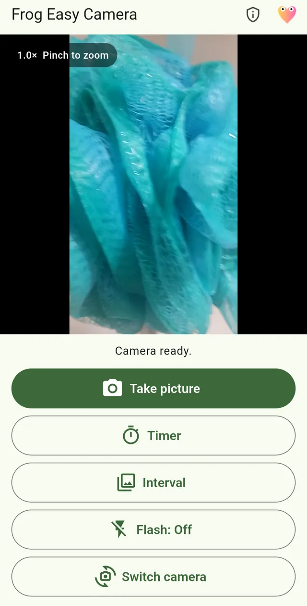
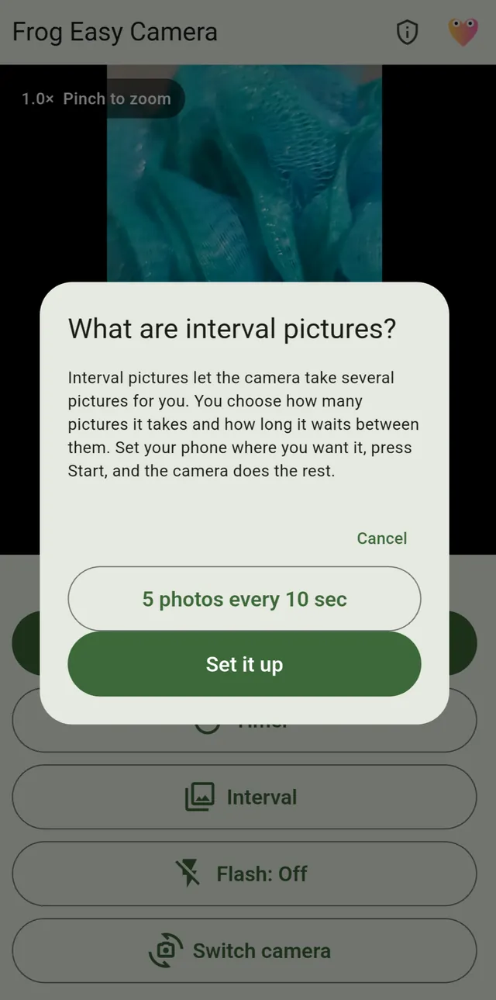

Android · APK download listed
Frog Easy Camera
A straightforward camera for one quick picture, a timed shot, or a whole interval series.
View APK download & installation Privacy & permissionsThe camera controls you actually need.
- Timed picturesChoose a five- or ten-second timer when you need a moment to get into the frame.
- Interval picturesConfigure a series of photos for changing scenes, projects, or occasional experiments.
- Zoom, flash, and camera switchingUse the controls supported by the camera currently selected on your phone.
- Session reviewReview recent pictures and optionally set one as a Home or Lock screen background.
Why this one? Interval shooting and timers stay easy to reach instead of being buried in menus.
A look inside Frog Easy Camera
Simple controls for everyday photos, with interval shooting when you need it.


Direct Android download
Get Frog Easy Camera
Free, always. No ads, subscriptions, or paid unlocks.
Only public releases published by Frogdadday appear here.
Published APK record · v1.0.1 · October 22, 2026
What this build offers: Timed and interval photos with straightforward camera controls. This is a feature summary, not a claim about what changed since the previous version.
- APK SHA-256
9f00847ec1e96787a4e5db4fb31d942128d35ee11b07715b48fa6449e2415b08- Signing-certificate SHA-256 fingerprint
25:EB:2C:3F:76:1B:95:CF:FB:D2:81:59:72:8D:75:68:30:F8:BD:18:FB:38:E1:98:CF:84:24:95:4F:D1:95:05
These identifiers were extracted from the published APK and its file SHA-256 checked against GitHub's digest on October 26, 2026. A public Android SDK signature audit passed the file, package and version checks on October 22, 2026. Neither check proves that this is the intended original signing key, confirms Play upgrade compatibility or substitutes for a security review. Fingerprints can change between releases.
Browse official Frogdadday GitHub Releases if the live download check does not load.
Installing an APK on Android
- Use the download button above when a public APK is available, or open the official Releases page linked above.
- Open the file. Android may ask permission to install apps from your browser or file manager.
- Review system warnings; proceed only when you trust the source. Turn off the extra installation permission afterward.
Website APKs do not receive Google Play automatic updates. Updating an installed app requires a compatible Android package and signing certificate.
This page checks whether a public APK exists; it does not independently verify the file's safety or signing certificate.
Your camera is not my data source.
No ads, accounts, analytics, tracking, paywalls, or network permission. Camera access is used for the preview and pictures; older Android versions request storage only when saving to the public Pictures folder.
Privacy & permissions
Photos are saved on your device. The policy explains camera access, older-Android storage permission, sharing, and what happens to saved pictures.
Read the full privacy policy